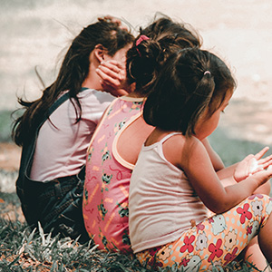
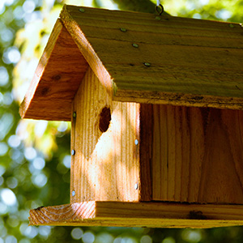
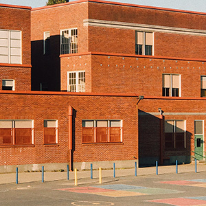
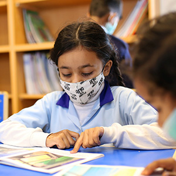
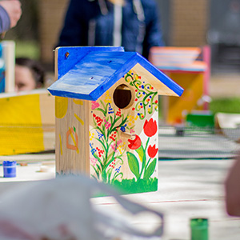
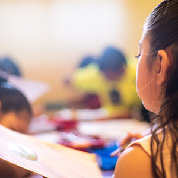
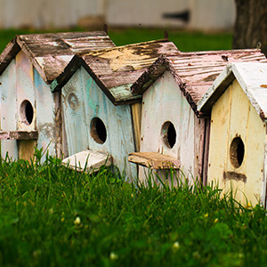

새집 달아주기
인공새집이란?
인공새집은 1875년 독일에서 고안하여 새들의 번식을 도와줌으로써 산림해충방제에 큰 효과를 얻자 세계적으로 널리 퍼진 것으로, 대규모 개발이나 삼림벌채에 의한 자연림이나 거목 등의 소실로 노거수가 없어 둥지를 틀지 못하는 새들의 번식을 도와줌으로써 새들에게 거주 공간을 제공하여 보충하기위한 자연보호활동의 한 예입니다.
지역 학교 참여 활동
학부모 분들의 주관으로 지역 학생들과 참여하는 조류 관찰과 인공둥지 짓기 프로그램을 진행하고 있습니다. 해당 지역의 대학생들도 자원봉사자로서 아이들과 함께 재미있는 프로그램을 개발하는 데 도움을 주고 있습니다. 이른 봄에는 지역 학교와 지자체가 공동으로 관청 근처 공원 앞의 광장에서 둥지를 만듭니다. 매년 약 60 개의 둥지를 설치하고 있습니다.
-

올해 참가자 사진
-

인공둥지가 설치된 모습
-

협회 건물 앞의 사진
-
강의실 풍경
주요 행사 내용
협회와지회 건물에서 진행하며 학부모와 학생들이 참여하는 인공둥지에 대한 강의 외에도 야생 조류의 생태에 대한 강의가 있습니다. 공예 시간에는 매년 "야생 조류 모양의 자석 만들기", "인공둥지 만들기", "새 깃털 그림 색칠"등과 같은 다양한 일을 실시하고 야외에서 실제로 인공둥지를 설치합니다.
-

인공둥지 및 야생조류 강의
-

인공둥지 만들기
-

새 깃털 그림 색칠하기
-

인공둥지 공원에 설치
담당자 정보 및 구매페이지
-
- 행사 담당자명 : 양승호
- (사)인공둥지 제작회
- 메일 주소: yang@yahoo.com
- 혹시 참여를 원하는 경우 연락바랍니다.
-
인공둥지 키트 구매
자세히